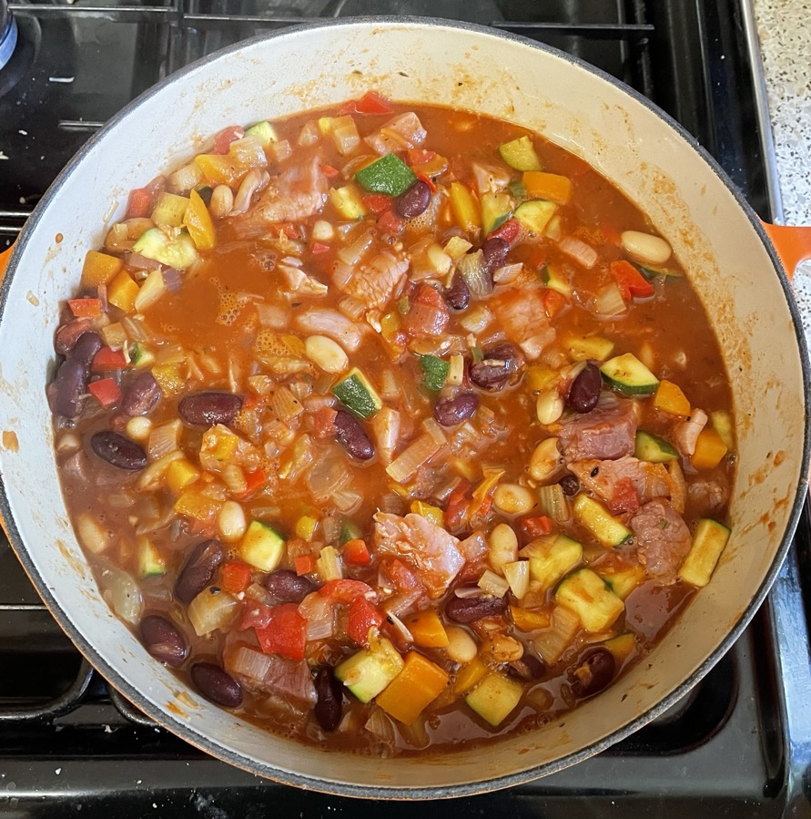

Gammon & bean stew
- Preheat oven to 180°C
- Heat to soften in casserole dish for 5 mins
- olive oil
- 2 onions chopped
- 2 red / orange / yellow peppers chopped
- 4 sticks celery chopped
- Add and cook for 2 mins
- 4 cloves garlic
- 2 tbsp Cajun seasoning
- 1 tbsp sweet smoked paprika
- Add
- 500ml low-salt chicken stock
- 1 butternut squash in 2cm cubes
- 1 tbsp Worcestershire sauce
- 1 tsp herbs
- Add
- 1 tin cannellini beans rinsed
- 1 tin red kidney beans in chilli sauce
- 1 tin tomatoes
- 4 tbsp tomato puree
- 1 tsp golden caster sugar
- Add
- 750g gammon joint trimmed & cut into large pieces
- Bring to boil and bake in oven for 1¼ hours
- Leave to cool in oven
Notes
- made: 8 Oct 2022, not better with fennel instead of celery and beans without chilli sauce
- use bigger casserole dish, 26cm
- gammon provides all salt needed
- changed: added sugar, spices cooked with garlic
- can use corgette instead of butternut squash
- Original recipe
Pics
